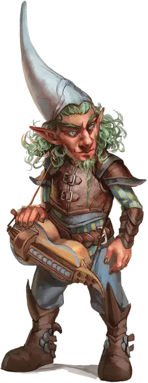

Говорящий с драконом
Dragon Speaker
Маленький Гуманоид, любое мировоззрение

Класс Доспеха 13 (кожаный доспех)
Хиты 36 (8к6 + 8)
Скорость 30 футов
| мод | спас | ||
|---|---|---|---|
| СИЛ | 10 | +0 | +0 |
| ЛОВ | 14 | +2 | +4 |
| ТЕЛ | 12 | +1 | +1 |
| мод | спас | ||
|---|---|---|---|
| ИНТ | 13 | +1 | +1 |
| МДР | 11 | +0 | +0 |
| ХАР | 17 | +3 | +5 |
Навыки Религия +3, Убеждение +5
Чувства тёмное зрение 60 футов, пассивное Восприятие 10
Языки Общий, Драконий
Опасность 2 (450 опыта)
Бонус мастерства +2
Особенности
Языки. Знает Общий, Драконий и ещё два любых языка.
Действия
Мультиатака. Говорящий совершает две атаки Ударом молнии.
Использование заклинаний. Говорящий накладывает одно из следующих заклинаний, используя Харизму в качестве базовой характеристики (Сл спасброска от заклинаний 13):
• Неограниченно: пляшущие огоньки [dancing lights];
• 1/день каждое: умиротворение [calm emotions], очарование личности [charm person], приказ [command], понимание языков [comprehend languages].
Удар молнии. Рукопашная или Дальнобойная атака заклинанием: +5 к попаданию, досягаемость 5 фт., или дистанция 60 фт., одна цель. Попадание: 13 (3к8) урона электричеством и цель отталкивается на расстояние до 10 футов от говорящего.
Реакции
Обезоруживающие слова (3/день). Когда существо, которое говорящий может видеть в пределах 60 футов, совершает бросок урона, говорящий может вычесть к6, из этого броска урона.
Описание
Говорящие с драконами - это харизматичные и убедительные ораторы, которые служат послами дракона среди других народов. Говорящие с драконами обладают громкими и авторитетными голосами, которые они используют для получения ценных ресурсов, дипломатических связей и пожертвований сокровищ и магии для своих драконов, а также сплетают магические узоры, как деликатные так и громоподобные. Они используют свое властное присутствие, чтобы вселять благоговейный трепет и страх в сердца как друзей, так и врагов.
Драконьи последователи. Драконы могут похвастаться множеством приспешников, учеников, наемников, послушников и рабов. Драконьи последователи - это те слуги, чья преданность дракону приближается к фанатичному почитанию и которые получают взамен от дракона магическую силу.
Драконьи последователи могут служить и почитать любого дракона, и их поведение и убеждения отражают дух дракона, которому они служат. У многих последователей дракона есть личные истории о доброжелательных драконах, которые поделились великими знаниями, защитили их город или спасли их жизни во время какого-нибудь безрассудного приключения. Другие последователи стремятся раскрыть тайны драконьей природы и жить жизнью, достойной награды дракона, и они мечтают о мире, где драконы могли бы жить среди них в качестве их правителей.